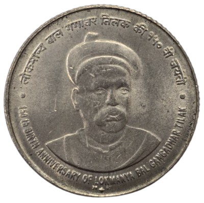
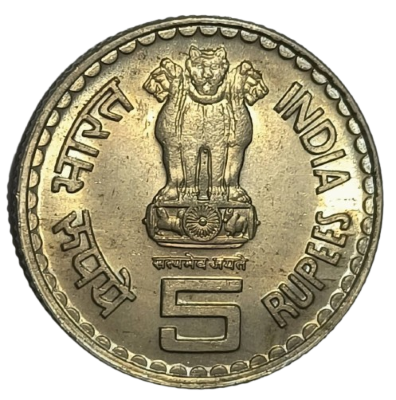
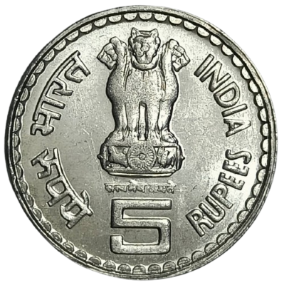

Lokmanya Bal Gangadhar Tilak
Lokmanya Bal Gangadhar Tilak (23 July 1856 – 1 August 1920) was one of the foremost leaders of the Indian independence movement. A mathematician, astronomer, philosopher, and journalist, he founded the newspapers Kesari (Marathi) and The Mahratta (English) to spread nationalist thought. He popularised the public celebration of Ganesh Chaturthi and Shiv Jayanti as platforms for mass political mobilisation, and was imprisoned by the British on multiple occasions for his fiery writings and speeches.
The title Lokmanya — meaning “accepted by the people as their leader” — was conferred upon him by the public and is inseparable from his name in Maharashtra and beyond. He is remembered with the tribute “Swaraj is my birthright, and I shall have it.” To mark the 150th anniversary of his birth, the Government of India issued a ₹5 commemorative coin in 2007. What followed was one of the few instances in post-independence Indian numismatic history where a coin was officially withdrawn from circulation due to a public controversy.
The Issued Coin and the Controversy
The ₹5 commemorative was struck at the Mumbai Mint in copper-nickel. Its reverse depicted a bust of Tilak facing three-quarters right, with the Hindi legend reading:
150th BIRTH ANNIVERSARY OF LOKMANYA BAL GANGADHAR TILAK
The word Tilakji — Tilak with the Hindi honorific suffix Ji — appeared in the Devanagari inscription. This usage immediately drew sharp objections from two quarters.
The Tilak family contended that the suffix Ji had not been appended to the names of Mahatma Gandhi or Jawaharlal Nehru on their respective commemorative coins, and that selectively applying it to Tilak was inconsistent and without precedent in Indian commemorative coinage. They argued that the honorific was not necessary and that Tilak’s own title “Lokmanya” was already a mark of supreme respect.
The Shiv Sena raised a separate but related objection. The party argued that Ji is a Hindi-language honorific — common in North Indian usage — and does not belong in the inscription of a coin honouring a leader from Maharashtra, whose cultural context calls for no such suffix. Adding Ji was seen as imposing a linguistic convention alien to Tilak’s own cultural heritage.
Legend Comparison: Withdrawn vs. Corrected
The sole difference between the withdrawn coin and the replacement is the word Tilakji versus Tilak in the Devanagari legend on the reverse. Drag the handle below to compare the two reverses side by side.


150th BIRTH ANNIVERSARY OF LOKMANYA BAL GANGADHAR TILAK
Withdrawal and the Three Strikes
Following the objections, the Mumbai Mint withdrew the Tilakji coin from circulation. The decision was significant: it acknowledged that the wording on a coin’s legend is not merely a typographic choice but carries cultural and political weight.
Two replacement coins were issued in 2007, both bearing the corrected inscription Tilak without any honorific suffix. The choice to issue two metallic variants also reflected the ongoing transition in Indian five-rupee coinage at that time, as the Mint moved from the traditional copper-nickel alloy towards ferritic stainless steel for its base circulation coinage.
Copper‑Nickel
Mint: Mumbai · RARE
Copper‑Nickel
Mint: Mumbai · SCARCE

Stainless Steel
Mint: Mumbai · SCARCE
Collector Notes
The withdrawn Tilakji copper-nickel coin is among the more interesting pieces in modern Indian commemorative numismatics, not for any rarity of design but for the documented historical reason behind its recall. Withdrawn coins with a clear, verifiable cause are uncommon, and this piece is accompanied by a political story that resonates particularly among collectors interested in Maharashtra and in the independence movement.
Because the coin was recalled relatively quickly after issue, surviving examples — particularly in uncirculated condition — are scarce. The Mumbai Mint was the sole striking facility for all three coins, and no other mint produced any variant of this series. The replacement copper-nickel and stainless steel issues are more accessible but are themselves less common than many other commemorative five-rupee issues from the same period.
A complete set of all three strikes — the withdrawn Tilakji and both corrected replacements — represents a self-contained numismatic story about language, identity, and the politics of honour in independent India.
Related Entries in the Catalogue
All three coins are catalogued individually in this portal under the Commemorative ₹5 Rupees catalogue: